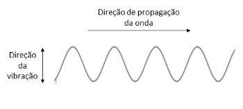
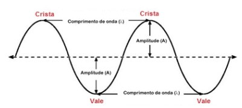

Introdução a Ondas
Teoria

Em, Física, uma onda é uma perturbação oscilante de alguma grandeza física no espaço e periódica no tempo.

As ondas possuem algumas propriedades que devem ser lembradas
Crista: os pontos mais altos da onda.
Vale: os pontos mais baixos da onda.
Comprimento de onda (lambda): distância horizontal entre dois vales/cristas seguidos.
Período: tempo gasto para produzir uma oscilação completa.
Amplitude: distância entre a corda em repouso e um vale ou uma crista.
Obs: frequência e período são grandezas inversamente proporcionais.

Vamos praticar!
Fontes
Ondas Brasil Escola
Primeira imagem de ondas
Segunda imagem de ondas
Education illustrations by Storyset